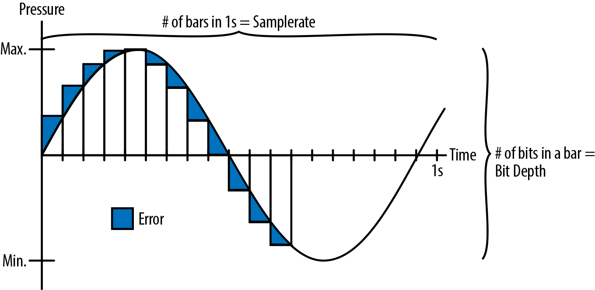

DOMSTEP
A Browser Dance Party
Who Am I
- Jamison Dance
- @jergason
- jergason on GitHub for assorted dumb things
- JavaScript Jabber, a podcast about C#
(ી(΄◞ิ౪◟ิ‵)ʃ)
24601
Who Am I
- Jamison Dance
- @jergason
- jergason on GitHub for assorted dumb things
- JavaScript Jabber, a podcast about JavaScript
- Former international rock superstar
Let's start an EDM band

Web Audio API

Wood Audio API

The StrangeLoop Orchestra
var c = new AudioContext();
var n = c.createOscillator();
n.frequency.value = 220;
n.connect(c.destination);
n.start(); n.stop(8);
var c = new AudioContext();
var n = c.createOscillator();
n.frequency.value = 329.63;
n.connect(c.destination);
n.start(); n.stop(6);
var c = new AudioContext();
var n = c.createOscillator();
n.frequency.value = 440;
n.connect(c.destination);
n.start(); n.stop(4);
An Example!
var ctx = new AudioContext();
var sine = ctx.createOscillator();
sine.frequency.value = 300;
sine.connect(ctx.destination);
sine.start();How Does Sound Even Work

Our Sound Wave
Digital Audio
The Worst Theramin
var ctx = new AudioContext();
var signal = ctx.createOscillator();
signal.type = 'sawtooth';
var filter = ctx.ceateBiquadFilter();
signal.connect(filter);
filter.connect(ctx.destination);
signal.start();
// magical pseduo code
filter.frequency.value = getMouseX();
signal.frequency.value = getMouseY();
Loading Buffers
var load = require('webuadio-buffer-loader');
var ctx = new AudioContext();
load('/song.mp3', ctx, function(err, buff) {
// lol no errors in demos
var node = ctx.createBufferSource();
// ᕦ(ò_óˇ)ᕤ
node.buffer = buff;
node.connect(ctx.destination);
node.start();
});
Dropping The Beat
var Beats = require('beatsjs');
var ctx = new AudioContext();
// load sounds to AudioBuffers
var instrumentsToBuffers = {
hh: buffers[0],
bd: buffers[1],
sn: buffers[2]
};
var beats = new Beats(ctx, instrumentsToBuffers);
var track = beats.notation('bd| bd -- bd -- bd --');
beats.startPlaying(track);
}
Put A Boid On It
Beats and Boids
Syncing To The Beat
beats.beatEmitter = function(beatTimes) {
// turn audio context time into a timeout time
var beatTime = auioContextTimeToTimeoutTime(beats.ctx, beatTimes[0]);
setTimeout(function() {
doStuffOnTheBeat();
}, beatTime);
});
The Secret of Wob

Wob Example
var ctx = new AudioContext();
var oscillator = ctx.createOscillator();
var gain = ctx.createGain();
var gainOscillator = ctx.createOscillator();
oscillator.connect(gain);
gain.connect(ctx.destination);
gainOscillator.connect(gain.gain);
gainOscillator.frequency.value = 3;
gainOscillator.start();
oscillator.start();
You Are Also In Our Band
Learn More
- The Spec
- Mozilla API Docs
- Signal Processing With The Web Audio API
- O'Reilly Book
- Getting Started With Web Audio API
- Overtone for ultimate inspiration
Cool Things People Made
- flockingjs by @colinbdclark
- Collaborative Web Audio Editor by @thedeftone
- Splice, a cloud music editor